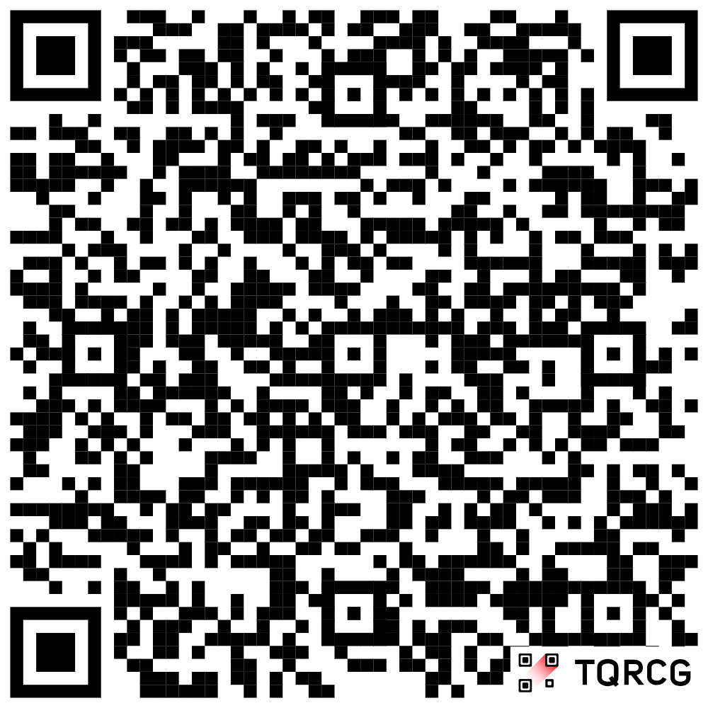
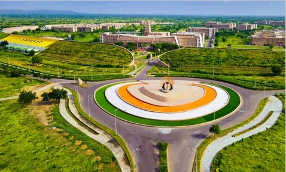
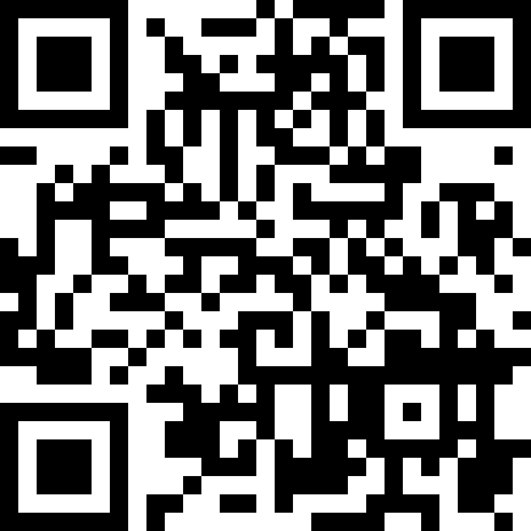
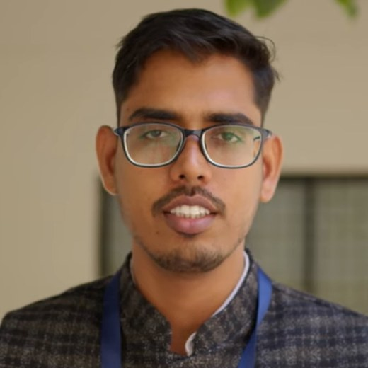
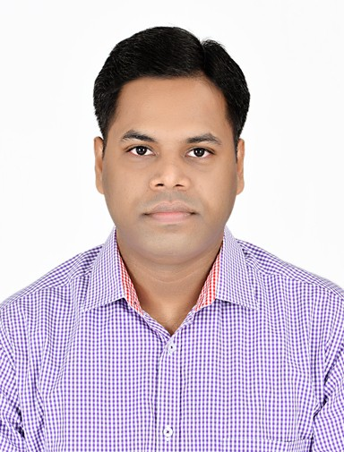
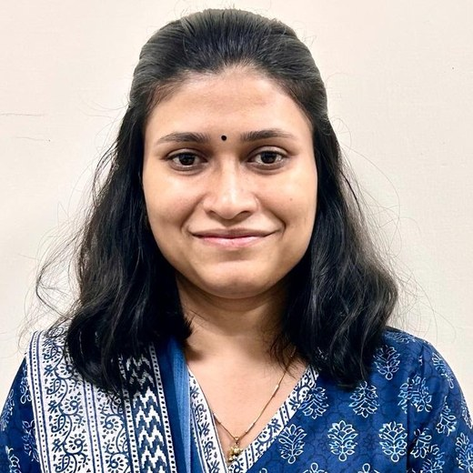

Satellite data & preprocessing
Finding, downloading and cleaning optical and radar scenes: sensors, bands, resolution, and what each archive is good for.
Every landscape is a stack of measurements. Pick a layer to see what it tells you.
Arid regions are where water, agriculture, land and climate stress meet first and hardest. This workshop teaches you to see that stress in data — and to work with it.
Over three days at IIT Jodhpur you will move from raw satellite scenes to usable environmental products: preprocessing and correction, image processing, vegetation and crop mapping, groundwater mapping, land surface temperature, and machine learning applied to geoscience problems.
The programme is built around open-source and freely available tools — Python, Google Earth Engine, and public satellite archives — so that everything you learn here you can keep using afterwards, from your own laptop, at no cost.
Each day pairs a short lecture with a longer hands-on lab, plus GPS and drone field exercises on campus. You leave with working scripts, not just slides.
Organised by IIT Jodhpur with the IEEE Geoscience and Remote Sensing Society and the Jodhpur City Knowledge and Innovation Foundation (JCKIF).
Six threads run through the three days. Each one is taught with a dataset you can download and re-run at home.
Finding, downloading and cleaning optical and radar scenes: sensors, bands, resolution, and what each archive is good for.
Reading rasters, band maths, batch processing and clean map figures using rasterio, geopandas, xarray and numpy.
Analysing decades of imagery in the cloud: collections, filtering, reducers, time series and exporting results.
Supervised classification, change detection and regression on geospatial data, with honest accuracy assessment.
Field exercises on campus: GNSS ground control, flight planning, image capture and turning frames into a mosaic.
Applied products for arid landscapes: irrigated area, crop type, groundwater indicators and land-use change.
The outline below is tentative. Session order and timings are confirmed with participants before the workshop.
Getting everyone to the same starting line, then straight into the field.
Welcome from the coordinators, an overview of the three days, and setting up your machine for the labs.
Optical, thermal and radar sensors; spatial, spectral and temporal resolution; the major open archives and how to search them.
Radiometric and atmospheric correction, geometric correction, mosaicking, clipping and stacking a usable scene.
GNSS ground control points on campus, drone flight planning and safety, and capturing a small survey block.
The longest hands-on day. Bring a charged laptop.
Building a clean, analysis-ready stack: cloud masking, gap filling, resampling and reprojection.
Rasters and vectors in Python: rasterio, geopandas and xarray; band maths, zonal statistics and reproducible figures.
Filtering, enhancement, spectral indices, and supervised versus unsupervised classification with accuracy assessment.
Building a crop-type map for an arid district from a seasonal time series, and checking it against field points.
Scaling up, then putting the work in a sustainable-development frame.
Feature design for geospatial data, model choice, training and validation, and where models quietly fail.
Combining satellite, terrain and ancillary data into groundwater prospect and stress indicators for a dry basin.
Running a multi-decade analysis in the cloud and exporting results, without downloading a single scene.
Turning geospatial products into decisions for water, agriculture and land resilience. Feedback, and certificates for all participants.
Anyone who works with land, water or climate data and wants to add a satellite view to it.
No prior remote sensing experience is assumed. Basic comfort with a computer is enough.
There is no registration fee. Because seats and lab machines are limited, participants are selected from the applications received and confirmed by email.
Fill in the registration form with your details, affiliation and a line about why the workshop fits your work. Applications are reviewed on a rolling basis, so applying early helps. If you need accommodation on campus, say so on the form.
Applications close once 50 places are filled.

Scan to register from your phone
An Institute of National Importance on the edge of the Thar desert — an apt place to study arid-region science, because the subject is outside the window.

IIT Jodhpur was established in 2008 as one of the newer Indian Institutes of Technology, and moved to its permanent campus at Karwar on the outskirts of Jodhpur. The campus spans about 852 acres and the institute is organised into departments and schools including the School of Artificial Intelligence and Data Science, the School of Management and Entrepreneurship, and the School of Liberal Arts, offering BTech, MTech, MSc, MBA and PhD programmes.
It is described as the first fully planned technical institute campus in India, with hostels, a library, a lecture hall complex, a 24-hour health centre with ambulance, residential and sports areas, and department-specific zones. Research at the institute runs across water and environment, energy, AI, and desert-region technology.
Jodhpur itself — the Blue City, with Mehrangarh Fort above it — sits at the eastern edge of the Thar. If you are travelling from outside Rajasthan, the weekend dates make it easy to add a day either side.
The institute sits on the Nagaur Road highway at Karwar village, roughly 24 km from the railway station and 25 km from the airport, about 40 to 45 minutes by road.
Jodhpur has daily flights from Delhi and Mumbai, operated by carriers including IndiGo and Air India. Check current schedules when you book, as routes change between seasons.
Jodhpur is connected by rail to Delhi, Mumbai, Kolkata, Chennai, Hyderabad, Kota, Kanpur, Ahmedabad, Indore, Bhopal, Jabalpur, Guwahati, Nagpur, Lucknow and Jaipur.
Jodhpur is linked by mega-highways to Jaipur, Jaisalmer, Udaipur and Ahmedabad, and deluxe and express buses run from Delhi, Jaipur, Ahmedabad and Vadodara.
IIT Jodhpur runs two institute buses, B1 and B2, between the campus and points in the city. Between them they cover Paota Circle, MBM College, the railway station, GPRA, Mandore, Riktiya Bheruji Circle, Jaljog Circle and AIIMS Jodhpur.

Carry a photo ID and your confirmation email — both are needed at the main gate.
Yes. Participation is completely free, and there is no registration charge of any kind. Accommodation and food support is provided for attendees.
Applications are reviewed by the coordinators, with an eye to a mix of backgrounds and to how well the workshop fits your current work or study. Selected participants receive a confirmation email with venue and reporting details.
No. The sessions begin from fundamentals and build up. Some familiarity with Python will make the labs more comfortable, but it is not a requirement — the exercises are written to be followed step by step.
A laptop and charger, a Google account for the Earth Engine sessions, and a photo ID for campus entry. Software installation instructions are shared before the workshop so you can arrive set up.
No. Participants arrange and pay for their own travel to and from Jodhpur. Accommodation and food support on campus is provided, so the travel fare is the only cost you carry.
Yes — a completion certificate is issued to all participants who attend the three days.
No. The workshop is in person only. The labs, the GPS work and the drone survey all depend on being on campus.


